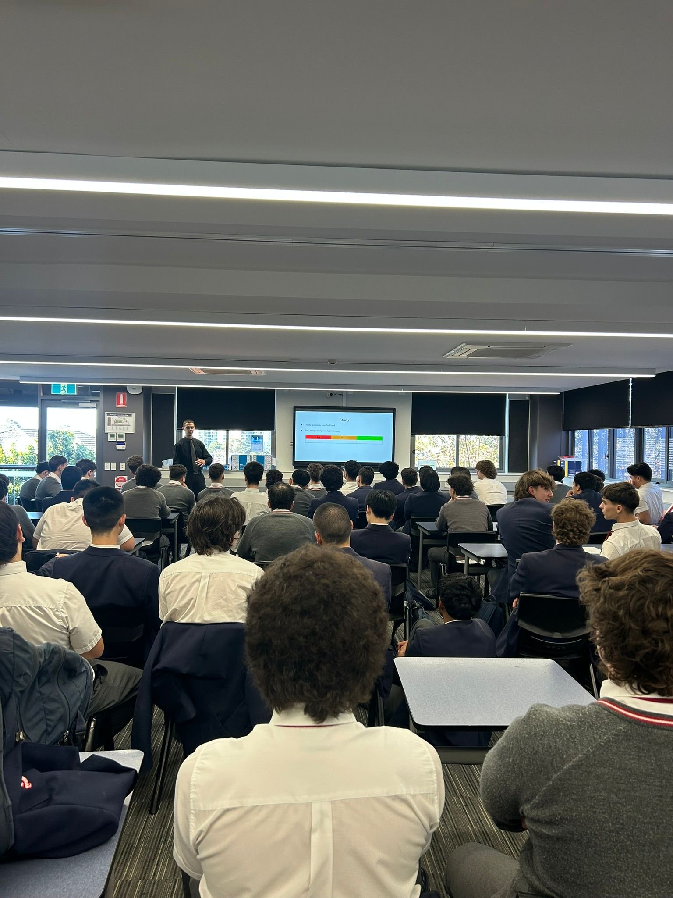
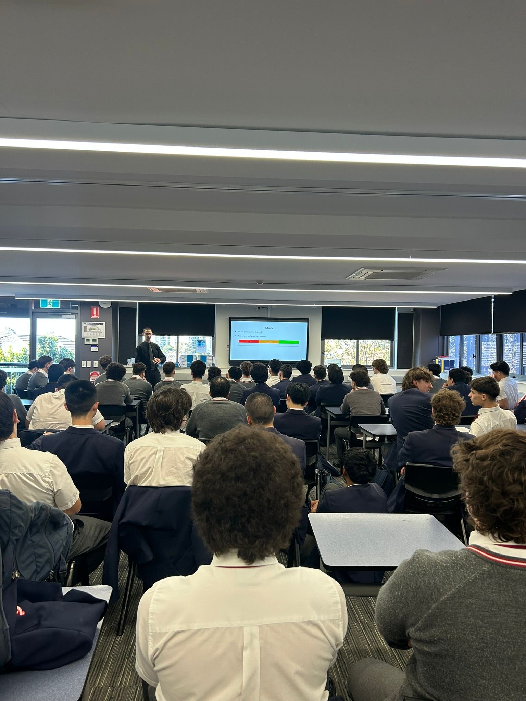

About Me
My name is Mario Baroud. I am a pre-service Mathematics and Computing teacher currently studying a Bachelor of Education (Secondary) at the Australian Catholic University. I want to make mathematics engaging, approachable, and enjoyable for every student, no matter their ability.
I started my career by tutoring high school students in mathematics, which helped me discover my love for teaching. Since then, I have worked in classrooms at Marist College Kogarah and Marist Catholic College Penshurst through learning support and professional placements. These experiences shaped my teaching philosophy: students learn best when they feel valued, supported, and challenged.
Outside the classroom, I run Baroud Education Tutoring, where I offer personalised maths tuition and lead group seminars for HSC students. This work lets me use classroom strategies in one-on-one settings and shows me that good teaching needs both subject knowledge and empathy, clear communication, and flexibility.
 
